A review of Computer Vision Architecture
A brief report on architecture details, modelling strategy and achieved results
 Image credit: Unsplash
Image credit: Unsplash
More is Less: A More Complicated Network with Less Inference Complexity
Problem solved: With each convolution layer, reduce
the computation of convolution that results in zero
activation.
- Hints about zero features that may lead to zero activation is given by a parallel light-weight convolution (either spatial or depth wise) activation.
- LCCL (low cost collaborative layer) are parallel low cost convolutions providing zero outcome hints to main convolution.
- To increase the sparsity, methods such as using RelU activation and Batch Normalization is explored.
- Mentions of GEMM and GEMV for theoretical and practical acceleration improvements.
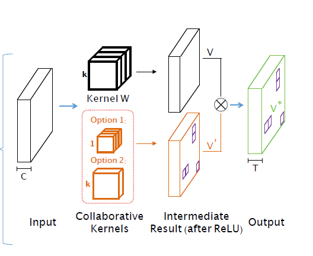
Learning Efficient Convolutional Networks through Network Slimming
Problem solved: Reducing the input channels that have near
zero activation, by enforcing L1 norm to be zero along with regularization
effect. Lesser the input channels, faster the inference.
- Input channel are pruned during the training by enforcing L1 norm to become zero.
- L1 regularization on scaling factor of batch normalization layers per channel does not require any architectural changes.
- Zero L1 enforcement per channel is achieved by addition of L1 norm of batch in the total cost function which then is needed to be minimized.
- Drop in the prediction accuracy can be restored by retraining with multi-pass scheme.
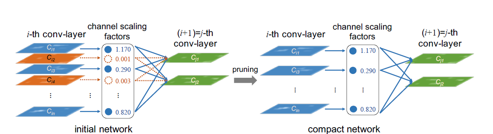
Pruning Filters For Efficient Convnets
Problem solved: Reduction in number of filters with low L1 norm.
These filters are assumed to have insignificant contribution to
output channels. With reduced filters, both complexity of computation
of convolution at current layer and next layer decreases.
- Filters in a given layer of a trained model are compared against each other based on L1 norm, and removed proportionally.
- Removal of filters is done in a single shot for whole network, after which training can be done to restore the accuracy
- Pruning filters across multiple layer can be done in either independent or greedy way.
- Sensitivity of pruning filters in a given layer is measured by the rate at which accuracy decreases with respect to number of pruned filter. Highly sensitive layers are left out for pruning.
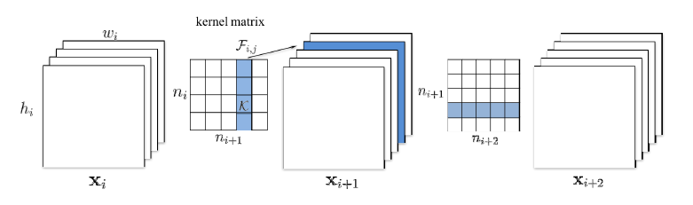
Data-Driven Sparse Structure Selection for Deep Neural Networks
Problem solved: A systematic approach to prune structures is a
deep network including filters or neurons, resnet blocks and grouped
convolution (cardinality) is presented. Additional parameters
in cost function is enforced to zero in order to realize structure
pruning.
- A general end-to-end framework for pruning structures at once without the need for retraining.
- Scaling factors is not needed to be necessarily associated to network weights (so does the gradients), these are generalized parameters and gradients are computed in additions to weight gradients
- Accelerated Proximal Gradient is adopted for scaling factor training
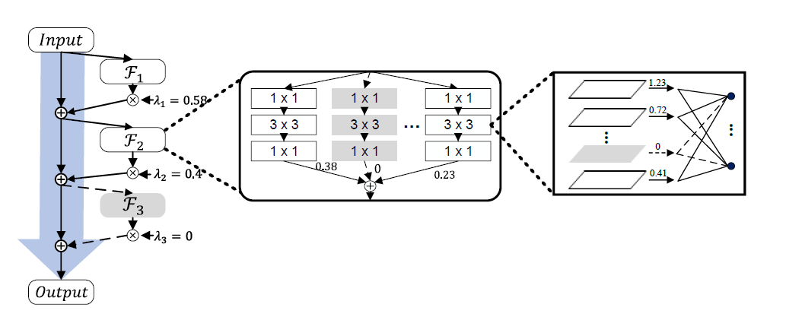
Pruning Convolutional Neural Networks For Resource Efficient Inference
Problem solved: Evaluates/proposes the greedy criterion for pruning
feature maps with an objective of minimizing the cost difference
before and after pruning along with L1 norm constraints on pruned
weights. With FLOPs criteria, it achieves resource efficient inference.
- It formalizes the gated pruning (i.e. if this feature channel be pruned or not) based on greedy criteria such as minimized weight, mean, deviation of activation, information gain, first order taylor expansion etc.
- System has two steps, pruning in which based on criteria, the importance of neurons is evaluated and pruned
- Training in which it trains the network with constrained cost object in consideration.
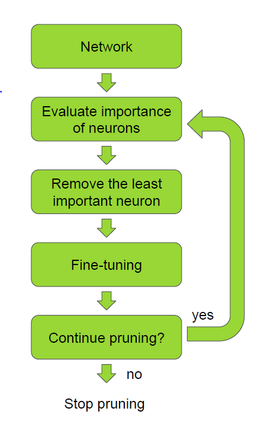
CondenseNet: An Efficient DenseNet using Learned Group Convolutions
Problem solved: Improves the dense-net by introducing the concept
of learned group convolution. Condensing and optimization
(both being the part of training phase) helps prune filters per
logical groups which gets re-arranged by indexing to formulate
normal group convolution. Better design strategy for dense-net
is also proposed.
- Exponential growth rate of input channel is compensated by using depth wise separable convolution in case of dense net. Condense net improvises this by group convolution that learns the grouping.
- Method used allows groups to automatically select appropriate channels or not use some at all. Since this architecture follows dense-net, non-used channels will be useful in another layer.
- Condense stage involves pruning per group by sparsity regularizer and optimization stage (second half of training stage) involves re-arranging and indexing of input filters for group convolution.
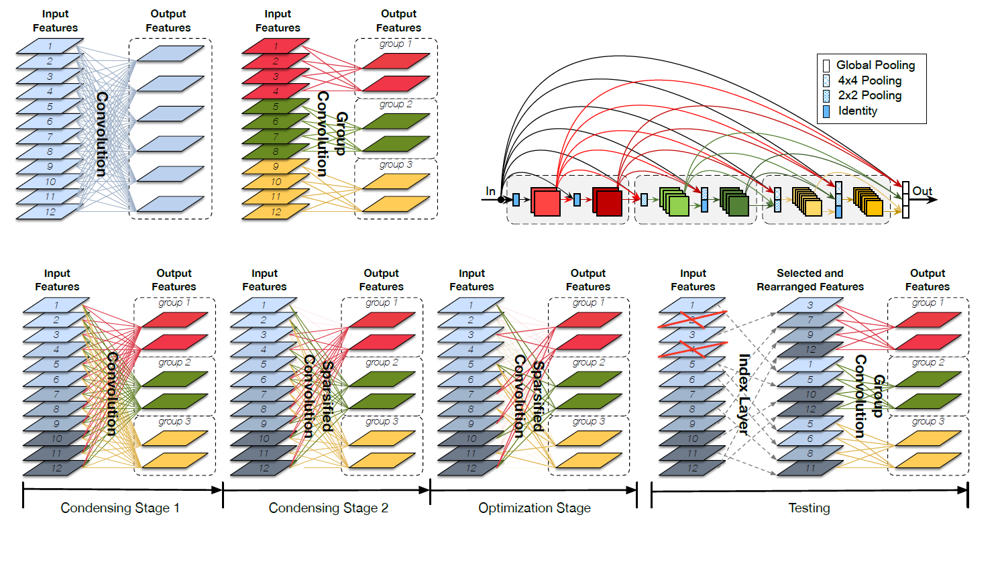
DelugeNets: Deep Networks with Efficient and Flexible Cross-layer Information Inflows
Problem solved: Effectively propagating cross layers parameters
as compared to residual blocks but at the same time being more
efficient that dense-nets. Through cross-layer depthwise convolution
the efficient information flow is possible whilst providing more
flexibility than resnets.
- Per block, composite network is used (bottle neck design) having same map dimentions.
- In one block, inputs from each preceding layers are convolved by point wise convolution channel wise. In other words, for a given channel c, all the filter maps at channel c from preceding layers are segregated and convolved depthwise to get filter map of channel c in the input layer. Same process to all channels.
- For block transition (where dimention changes), 3X3 strided filters are applied to match the input dimentions.
- Whole idea is to have cross layer separable convolution to reduce computation complexity.
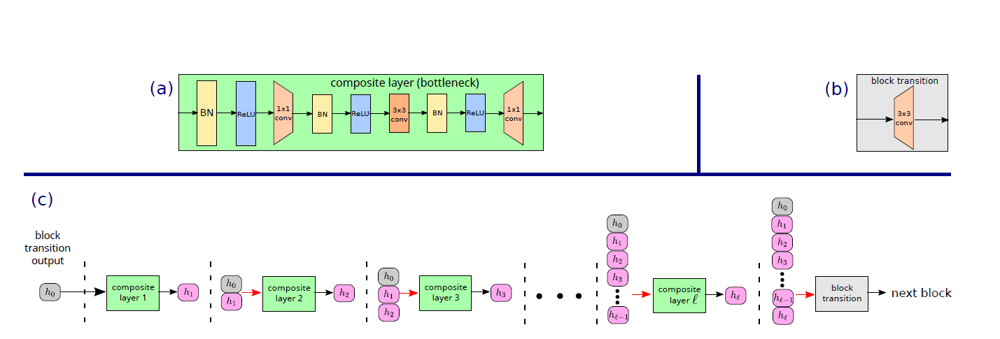
Deep Pyramidal Residual Networks
Problem solved: Through empirical studies, it was found that
increase in feature map dimention at residual blocks significantly
increase the resnet burden at those layers. Thus, a gradual increase
in feature map depth is introduced which increase accuracy.
- Pyramidal shape is introduced which gradually increase the filters at every layer. Skip connections are done through zero padding instead of 1X1 convolution.
- Several pyramidal designs are explored which increase the filters as a function of layer index.
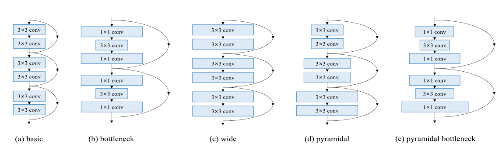
Deep Expander Networks: Efficient Deep Networks from Graph Theory
Problem solved: Solves high connectivity (for good representational
power by efficient information flow through network) but remaining
under a given level of sparsity. This reduces the inference time
with similar accuracy levels.
- Explores graph theory (expanders graphs), in which layer connections are modelled as several bipartite graphs connected after each other.
- In each bipartite connections, limits the number of edges but still having all connections globally.
- For structured sparsity, random expanders and explcit expanders are proposed.
- Explicit expanders are formulated under XOR operation of some group generators and output vertex set.
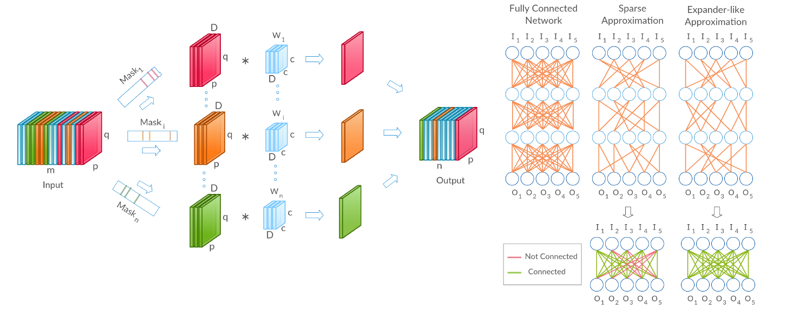
Aggregated Residual Transformations for Deep Neural Networks
Problem solved: Improves the representational power of network to
reduce the number of parameters used. Proposed cardinality as a
hyper-parameter along with width and depth of the network which
is easy to manage. Aggregation of transformed input with addition
to produce output is proposed. Design space for mentioned network
has lesser parameters (which is cardinality). Increasing cardinality
is more effective than increasing depth or width to gain accuracy.
- Homogeneous input transform is proposed for implementation which is followed by aggregation or addition (bottleneck architecture).
- Conceptual difference as compared to Inception-resnet lies in topology followed by each transformation paths. Its the same in this proposal.
- Conceptual difference as compared to group convolution lies in the fact that grouping can be done only upto one layer, whereas proposed system goes beyond one layer of transformation path.
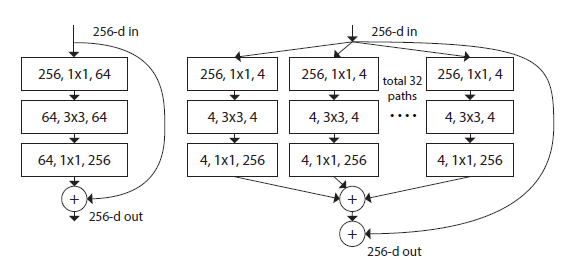
DeepRebirth: Accelerating Deep Neural Network Execution on Mobile Devices
Problem solved: Inference acceleration by streamline slimming
(combining across layer depth) and branch slimming (combining
along network width) of tensors and non-tensors. Sparsity of tensors
are exploited with less relevant high utilization non-tensors
through combination and retraining.
- Observation about excessive runtimes of non-tensor units are made and possibility of combining those with tensor nearby tensor units is explored.
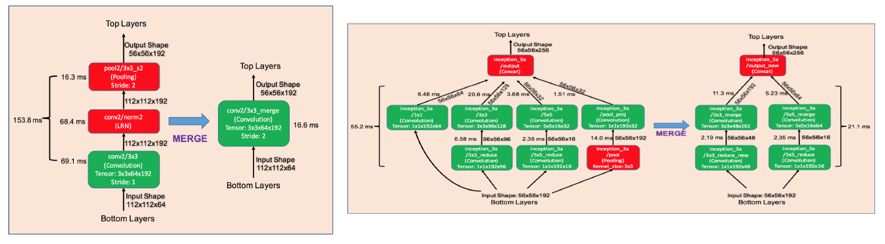
Accelerating Convolutional Neural Networks for Continuous Mobile Vision via Cache Reuse
Problem solved: Faster inference in continuous image data stream
in mobile device is proposed by considering the previous layer
image similarity with the current input. The idea has been generalized
to reusing the blocks of initial convolution computations.
Image similarity is measure block wise such that similar blocks
are invariant of translation (diamond search).
- For computation overhead, image blocks are compared for similarity.
- For cache erosion (more relevant in deeper layers) where spatial location of data starts making less sense and cache reuse cannot be determined, reuse is restricted to initial layers.
- Similar to input raw image, convolution output can be treated as input for next layer are cache reuse by spatially comparing the similarity is possible.
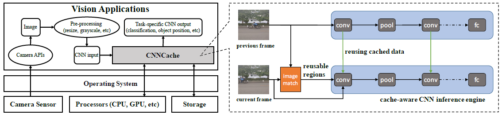
BranchyNet: Fast Inference via Early Exiting from Deep Neural Networks
Problem solved: Proposes the usage of branches in deeper network
for early stopping and as a way to regularize network. Conventional
joint optimization based training is used.
- Branches helps in faster inferences where convolution of other branches are dropped.
- As a bi-product of this architecture, regularization and mitigation of vanishing gradient is achieved.
- Design space for putting branches at different entry points of main branch is explored.
- Better caching efficiency on CPU is shown.
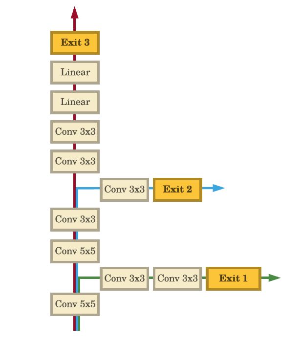
Crescendo Net: A Simple Deep Convoltional Neural Network with Ensemble Behavior
Problem solved: Basic building block called crescendo blocks are
proposed wherein multiple convolution parallel layers with incremental
depth enable whole network to act as ensembled network. As a results
representational strength increases without using residuals.
- The different depths of parallel paths lead to different receptive fields and therefore generate features in different abstract levels.
- Design space for crescendo blocks are explored for less hyper-parameter tuning.
- Memory efficient training is proposed where other parallel paths are frozen when training for one path is going on.
- Like fractals-nets, drop-connects is used (dropping paths) along with dropouts.
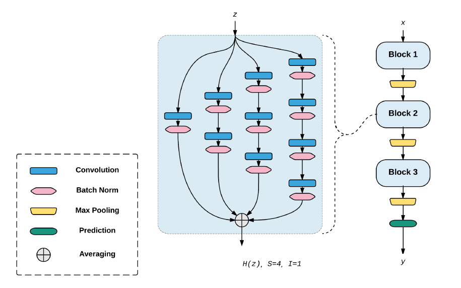
BlockDrop: Dynamic Inference Paths in Residual Networks
Problem solved: Upon observation that human visual system spend
less time on simple object and more on complex lead to a dynamic
inferencing system that upon context (complexity of input), drops
several convolution operation in between (can be modelled as dropping
residual blocks). Policy for dropping residula blocks comes from
policy network trained for maximizing accuracy while using minimum
inference blocks(reward is formulated in such a way in reinforcement
learning). Lesser computation on contextual inputs leads to reduction
in inferencing time.
- Pretrained resnets are jointly trained with policy network that has to output binary vector representing if blocks needs to be dropped or not based on difficulty of input image. Such policy network implicitly learns the input complexity representation.
- Drop or not per layer is modelled as K dimentional bernoulli. To train the policy network, expected reward is maximized by expected gradient training procedure.
- Initial steps use curriculum learning followed by joint tuning of policy network and resnet.
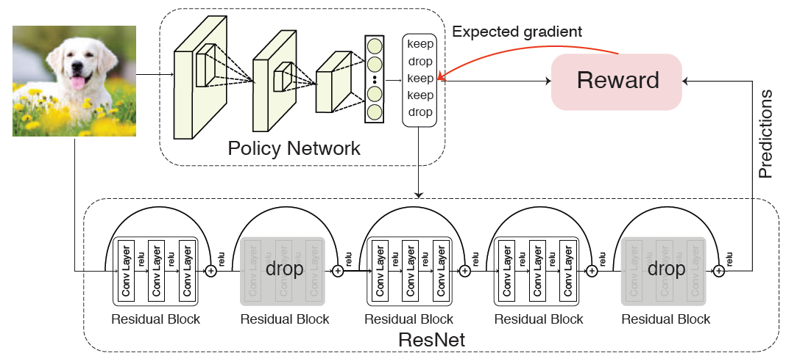
ThiNet: A Filter Level Pruning Method for Deep Neural Network Compression
Problem solved: Filters of a given layer is pruned such that output
of next to next layer is not being affected. This method differs in
the regard that it does not consider immediate layer's channel activation
in its optimization problem instead relies of having a network with
maximum representation capacity. Doing so leads to smaller network
without accuracy loss.
- After pruning, fine tuning is done to regain the accuracy.
- Method is data driven as training example is used to determine the importance of a filter based on changes in next to next layer’s output(sampled for different pixel, spatial location).
- Under optimization problem for next channel’s representaion strength, predefine compression rate is encoded which determines how many channels and hence how many previous layer filters has to be pruned.
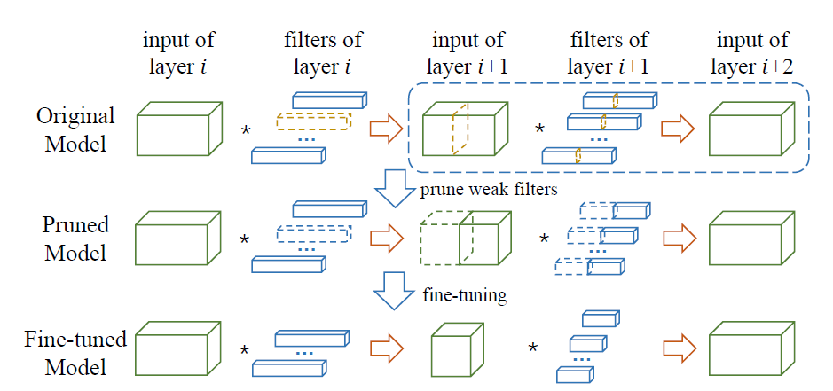
EraseReLU: A Simple Way to Ease the Training of Deep Convolution Neural Networks
Problem solved: Eased the training along with accuracy improvements
along lesser amount of computations by observing that network
become too non-linearized by stacking up non-linear units. It proposes
to proportionally remove relu units from each block of network module.
- Going from sigmoid to relu helped a portion of neurons to get non-linearized instead of individual neurons per layer. Still, for such layers, application of relu did not linearize negative units.
- Removing relu in proportion of number of layers helped to get all neurons linearize for several layers.
- Removing relu from several spots has lead to increase in representational power of networks with less complexity.
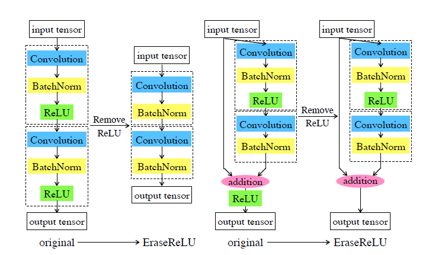
SEP-Nets: Small and Effective Pattern Networks
Problem Solved: Observation that binarizing only 3X3 convolution(spatial
feature extraction) and not 1X1 convolution (feature transformation) may
lead to model compression with similar accuracy but a lower computation.
Proposes Patter Residual Block on same concept, from which SEP-Nets module
is constructed.
- At an equivalent accuracy of MobileNets, model size has been compressed.
- Binarization can be done from initiation or train-binarize-tune method can be adopted.
- Binarization of non-transformation convolution helps faster computation at inference time.
- Instead of concatenation, addition operation is used where 1X1 works as inter residual connection.
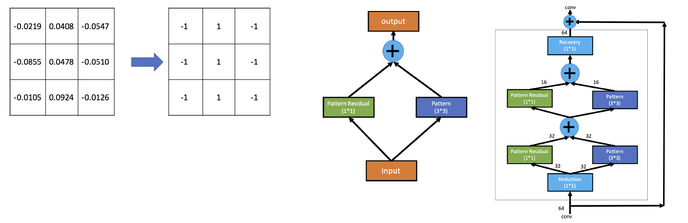
Local Binary Convolutional Neural Networks
Problem solved: By employing the techniques of local binary convolution
(predefined filters) instead of learnable weights, paper proposes to reduce the
number of parameters required to convolve. Predefined convolution followed by
non-linear activation and the followed by 1X1 learnable convolution composes
LBCNN modules.
- LBC anchor weights can be stochastically generated with required sparsity.
- Difference map from LBC is produced by similar convolution but with pre-defined weights. Variable pivot and ordering is hence defined by that.
- Bitmap from difference map is produced by using non-linearity such as sigmoid.
- To compose the feature map, normal 1X1 convolution is used.
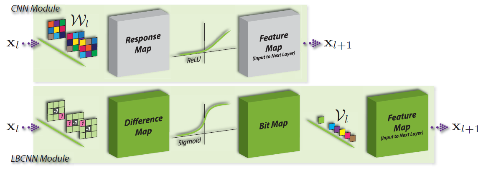
Towards Accurate Binary Convolutional Neural Network
Problem Solved: Unlike other binarization technique which straight forward binarizes
weights and activation maps, this paper proposes to approximate the full precision by
multiple binary filters or activations. With same accuracy, this technique has shown to
be computationally efficient.
- Using straight thorough estimator, binary filters can be trained. Further, binary filters(calculated using full precision weight mean and variance) may contain sift operator that can be learned.
- Binary filter coefficients are computed at every train forward iteration by solving linear regression over actual weights and approximated weights.
- Whole weight binarization and channel level binarization are suggested methods.
- Activation in the similar way is binarized using multiple binary activation maps, in order to accelerated bitwise computation on FPGA.
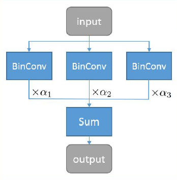
clcNet: Improving the Efficiency of Convolutional Neural Network using Channel Local Convolutions
Problem Solved: This paper proposes a structured way of composing group convolution
such that full channel receptive field in a given block is 100 percent.
This introduces the idea of more generalized channel local convolution
and acyclic graph called channel dependency graph that connects
output channel to input channel in a convolution block and measure channel
receptive field of that convolution block.
- Observation such as having full channel receptive field in a convolution block is required to have efficient information flow for better representational power in a CNN.
- Interlaced group convolution, one of the two building block for cnc net is developed which with group convolution completes a convolution block.
- Determination of block parameters such as number of groups in IGC and GC is done through minimizing a developed cost function per convolution block remaining under the full channel receptive field constraints.
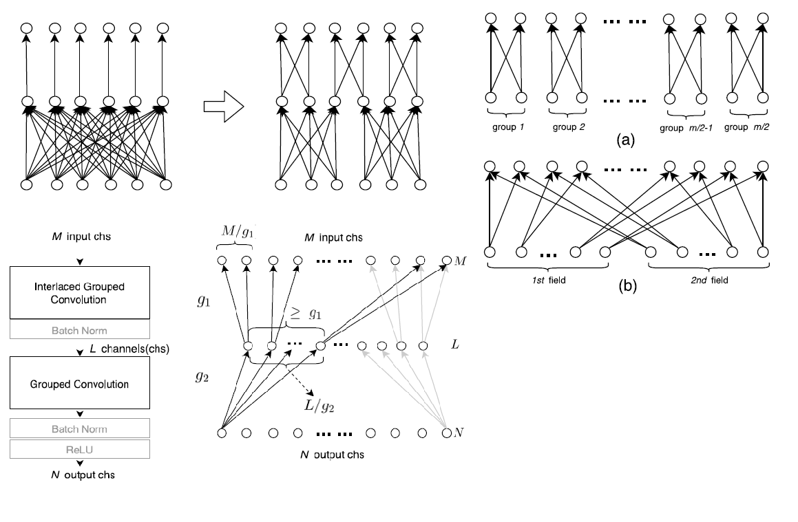
The Enhanced Hybrid MobileNet
Problem solved: With some heuristics, paper managed to improve the baseline
mobilenet accuracy. Added a third parameter depth and played around with
fractional pooling.
- Have formulated the computation and parameters ratio with newly added depth parameter.
- With heuristics approach, improved the baseline accuracy while maintaining the parameter and computation ratio same.
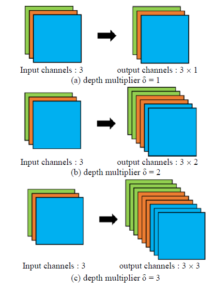
DropMax: Adaptive Stochastic Softmax
Problem Solved: Paper proposes to drop exponential terms from logits
randomly so that network becomes an ensemble of exponential number of
networks each trained on a different subset of problem. Logit dropout
probabilities are learned during training steps.
- Each training step is considered to be ensemble of exponential models.
- Computationally intractable probability calculation during inference is approximated with monte-carlo approximations.
- Idea is to drop classes which are not being confused much so that sub-problem being solved is smaller.
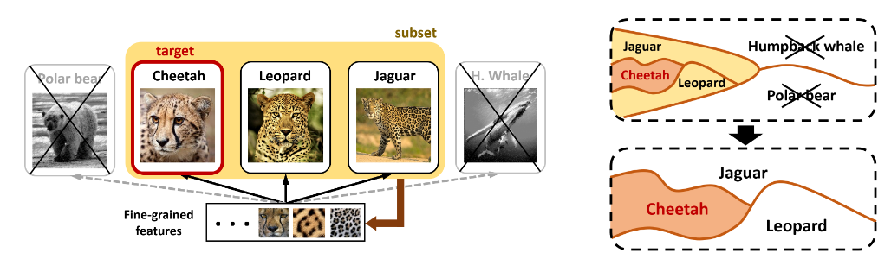
Improving CNN Performance with Min-Max Objective
Problem solved: The activation at each layer is visualized to
be an object manifold (or a space whose shape inherently represent
something) where each dimension corresponds to objective classes
to be learned by the network. A cost is proposed that directly
considers activation map in optimization target.
- Optimization tends to minimize compactness of each object manifold(feature variation) and maximize margin between different manifolds.
- Applying cost to arbitrary layer takes care of all the previous layers in network, due to backpropagation.
- To make gradient computation tractable, kernel trick is used.
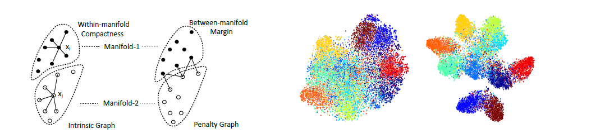
Dilated Residual Networks
Problem solved: Empirical studies on the effect of output and
receptive field leads to the conclusion that use of dilated
convolution filters in the later layer in state-of-art networks
increase accuracy.
- Gridding artifacts due to dilation has been removed by removing max pooling and adding additional layers with decreasing dilation rates and removing residuals in those layers.
- Architecture for dilated residual network (DRN) is presented based on above consideration and it is shown that increase in accuracy has higher as compared to accuracy that would have resulted by increase in parameter.
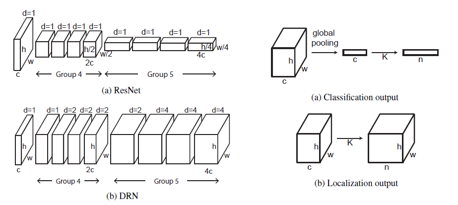
Interleaved Group Convolutions for Deep Neural Networks
Problem solved: Using two group convolution, an interleaved grouped
convolution block is created which proves to be wider that normal
convolution. Wider network helped network represent more and had
higher accuracy.
- Permutations in primary group convolution and secondary convolution each makes block equivalent to normal convolution.
- Interleaving in secondary group is done such that each group has one filter map from every primary group. After applying pointwise convolution on secondary group, channels are permuted back for input to next interleaved group convolution block.
- Optimal grouping factor has been derived to maximize width of the block.
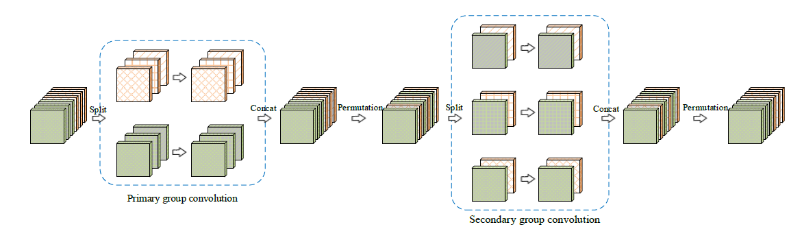
Incomplete Dot Products for Dynamic Computation Scaling in Neural Network Inference
Problem solved: A tunable is provided to adjust how many filters
to be used during inference dynamically based of computation
requirements. Filters are arranged from highly important to least
important (similar to singular values in SVD). Profiles is presented
by a set of coefficients (hinting how may filters to be used in each
layer)
- Incomplete dot product just does the dot products of filters and input channels as required by the profile.
- Arrangement of convolution channels and filter from high importance to low importance is possible because of the training procedure followed.
- All coefficient to one is equivalent to complete dot product.
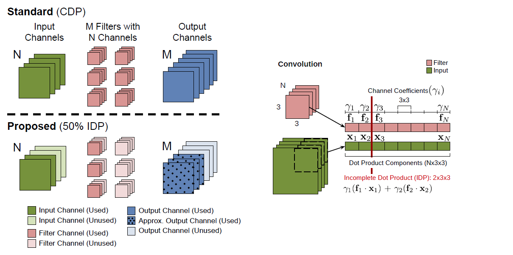
SwGridNet: A Deep Convolutional Neural Network based on Grid Topology for Image Classification
Problem solved: Proposed a grid like structure where output to a
unit (convolution) is fed by splitting the input from previous
block and through previous dimensionally neighboring unit. Such
construction enables architecture to act like ensemble of many
models as suggested by other simple architecture such as res-net.
- Splitting is followed by convolution at grid level which is followed by concatenation from all the unit and input from previous block.
- Convolution units in a grid can be constructed by varying depth path(which is output feed to deeper neighbor)
- Number of output channels from each unit can be different from its neighboring units but total input will be equal to the sum of all outputs from neighboring units.
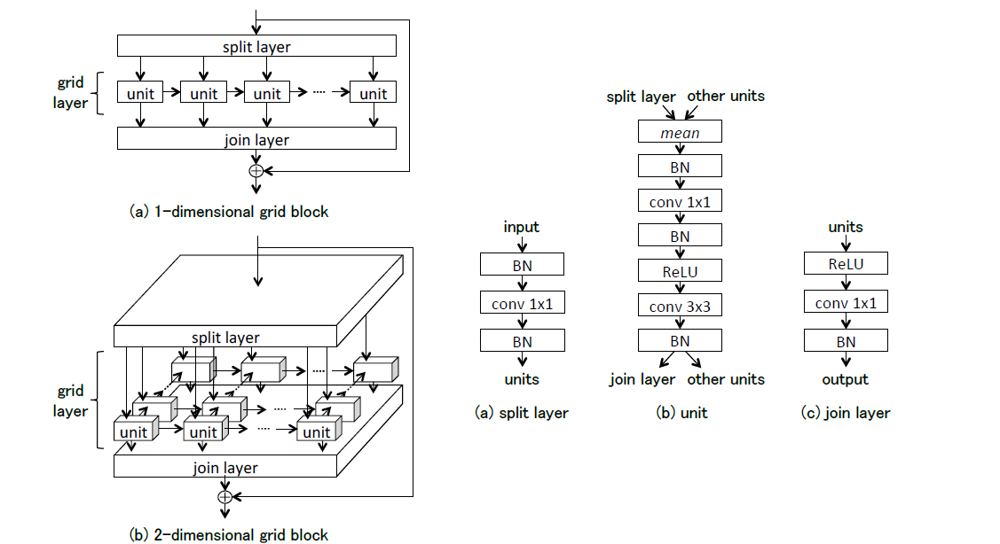
ShaResNet: reducing residual network parameter number by sharingweights
Problem solved: Upon observation that in a group of residual
blocks(same stage) with same dimensionality (where no resolution
reduction is done), spatial convolution can be shared among those
residual blocks. By using a shared filters among all the pointwise
convolution (or non spatial convolution) on a given stage among res
blocks, computation can be reduced with accuracy loss.
- Network is trained normally, end-to-end
- Gradients are back propagated as usual to pointwise convolution and accumulated for shared weight per stage
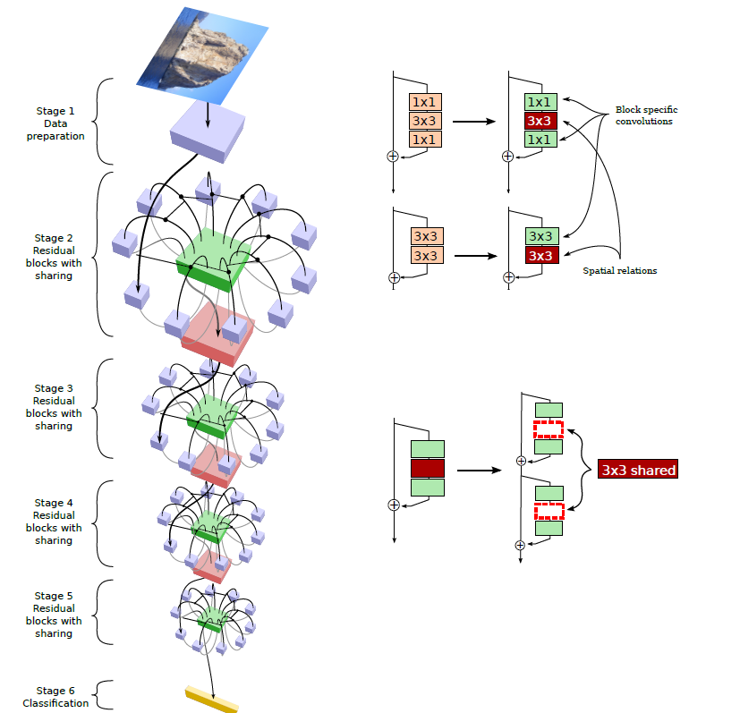
Convolutional Networks with Adaptive Computation Graphs
Problem solved: Paper proposes a method to adaptively switch off
block computation (in res-net setting) and allow flow of data to
net layers. This adaptive switching is based on input or context
passed as an input. By constraining on number of times a layer
should be switched off(enforcement during training step), gating
mechanism adapts itself to switch off gates for certain inputs
reducing computation complexity. Network is also robust to
adversarial attacks.
- Unlike highway network which is based on soft thresholding, this is hard thresholding. It focuses on utilizing important parts of computation block which have been made efficient to handle certain input.
- At training step, cost function constrain on number of times a layer should be executed. Soft decision of gating is used during training.
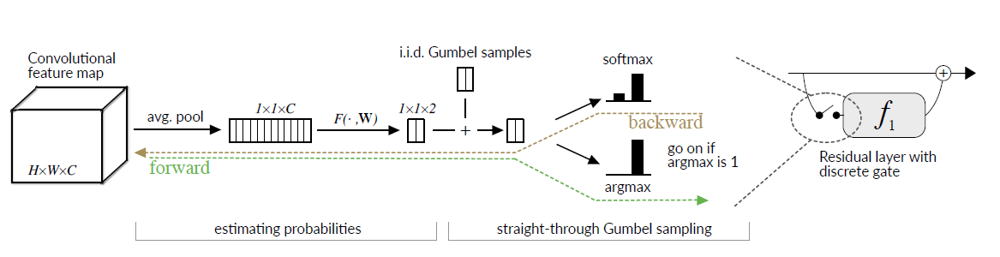
SkipNet: Learning Dynamic Routing in Convolutional Networks
Problem solved: It is observed that a complex example needs few
extra layers of computation to get correctly predicted. So for
non-complex inputs, some layers can be skipped. Skipping a
computation block is done through passing previous layer input
to a gate(composed of RNN, shared by each layer) component. Using
softmax, gate determines if layer be skipped or not.
- Hybrid RL training procedure where supervised training step with softmax gating is used for backpropagation to work. RL is used to minimize the computation reward (less computation is rewarding) along with higher accuracy.
- LSTM RNN is used and shared among layers to reduce gating overhead.
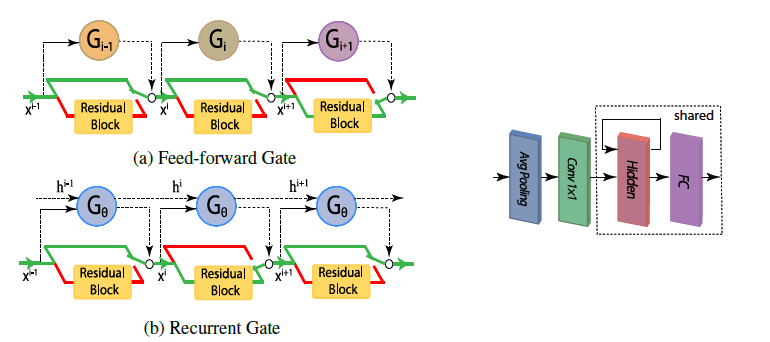
Papers from 2016
EIE: Efficient Inference Engine on Compressed Deep Neural Network
Problem solved: To fit whole network model in cache
so that DRAM access is minimized, models are Compressed
by involving techniques such as pruning and weight sharing.
Once model are in cached, computation requires indirect
access to weights(exploit static sparsity) and activations
(exploit dynamic sparsity) which costs inefficiency.
Thus compressed models are expanded.
EIE develops a hardware design that directly works on
compressed model using CSC format for inference.
- CSC(compressed sparse column) format employees two vectors. First encodes shared weights and second encodes relative distance in cache memory.
- This design effectively works on fully connected layers.
- Hardware design includes description of all logical units and queuing/scheduling algorithms.
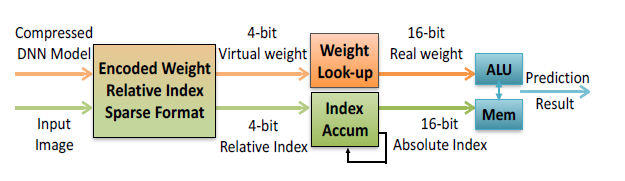
Deep Networks with Stochastic Depth
Problem solved: Reduction is training time while improving
the generalization accuracy by randomly shortcutting the inputs
to next to next layer using identity function (as used in resnet)
- Using bernoulli random variable, dropping the layer reduce the train time. At test time, layers are preserved. So, while training, networks are shallower and at inference, they are deeper.
- Increase in accuracy (as compared to similar static resnet design) is attributed to ensembling nature of many resnets.
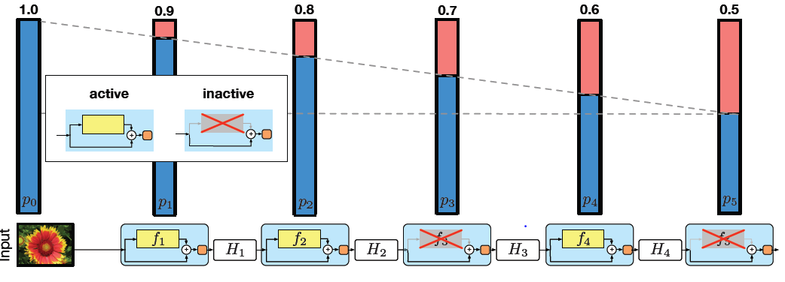
PerforatedCNNs: Acceleration through Elimination of Redundant Convolutions
Problem solved: Reduction in convolution computation by extrapolating
some elements by nearby values. A perforated mask is created
that describes what part needs to be have convolved value
and which parts can be extrapolated by nearby value.
- Perforation masks are created statically or upon the batch observations through out training. Static masks such as uniformly randomized, grid and pooling structured mask is proposed.
- Based on training data (statistically), impact mask is proposed that removes least important positions such that extrapolation effects on accuracy for those positions can be minimized.
- At each iteration, perforation rate at each layer is chosen such that impact on the loss is minimized. This is greedy approach.
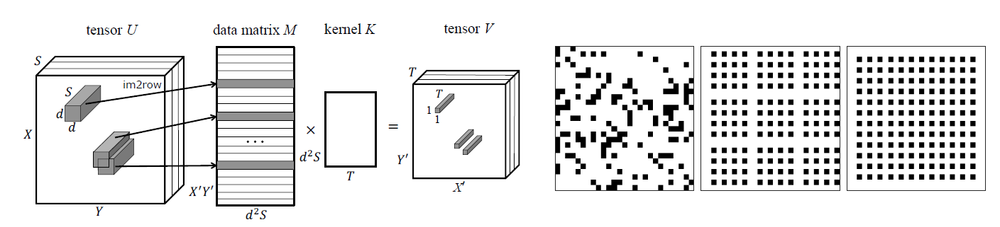
Papers from 2015 and older
Compressing Neural Networks with the Hashing Trick
Problem solved: To reduce the model size, weight sharing techniques
is proposed where instead of storing actual weight, hash key is
stored and at inference time, hash value is restored from weight
array.
- Hash trick method is used.
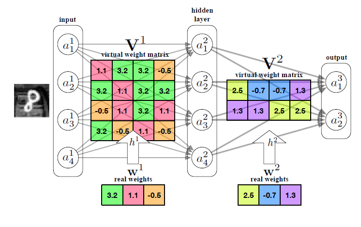
Tiled convolutional neural networks
Problem solved: An approach is presented where a weight is
untied or unshared uptil certain distance of spatial location.
This can effectively produce invariance to rotation and scaling
- Untying of weights are contrasted with tied weight where same set of parameter extracts features for a pixel location. An untied weight is equivalent to freely choose a different weight for a neighboring pixel.
- Using a different weight per patch remains valid for certain distance until receptive field for certain feature remains relevant.
- Unsupervised pre-training is used to initialize the weights before supervised backprop.
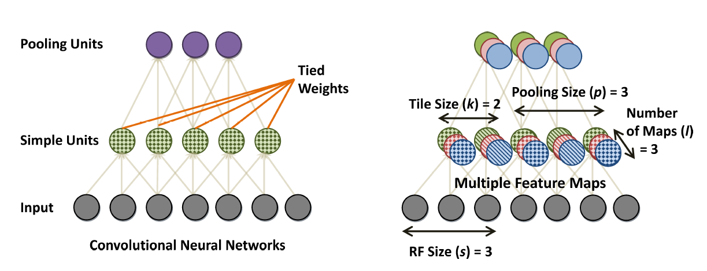